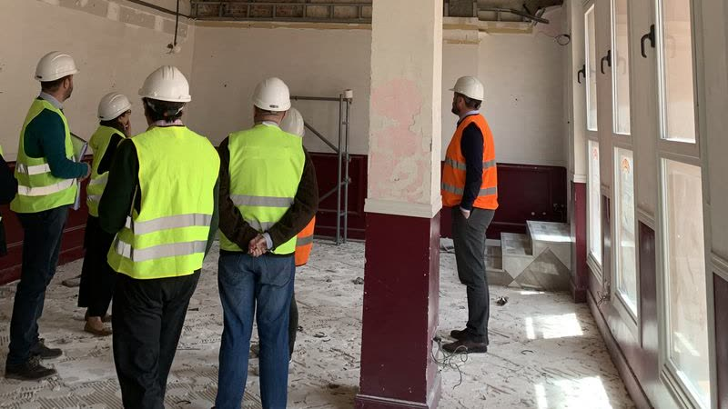

Certificado energético para vender o alquilar
Si vas a vender o alquilar una vivienda o un local, necesitas el certificado de eficiencia energética registrado. Lo hacemos completo: visita, cálculo, etiqueta y presentación en el registro de la Junta de Andalucía.

Para qué inmuebles
- Vivienda
- Piso o apartamento
- Local comercial
- Nave industrial
- Obra nueva
- Renovación de certificado
Algunos inmuebles están excluidos, como ciertas naves industriales de baja demanda energética. Comprobamos tu caso antes de presupuestar.
Qué incluye
Visita al inmueble
Tomamos los datos que pide el cálculo: cerramientos, ventanas, instalaciones y orientación.
Cálculo y etiqueta
Con un programa reconocido oficialmente. La etiqueta es la que tendrás que incluir en los anuncios.
Registro en la Junta
Lo presentamos en el registro de certificados energéticos de Andalucía, que es el que se aporta en la notaría.
Cómo funciona
Nos dices dirección, metros y si es venta o alquiler.
Te damos precio cerrado y fecha de visita.
Visitamos el inmueble y tomamos los datos.
Recibes el certificado registrado, listo para la notaría.
Normativa
El procedimiento lo regula el Real Decreto 390/2021. Certificado firmado por técnico competente y registrado en el Registro de Certificados Energéticos de Andalucía.
Preguntas frecuentes
¿Cuándo es obligatorio?
En la venta o el alquiler de viviendas y locales sujetos a certificación, y en los edificios de nueva construcción. Hay excepciones, que comprobamos en cada caso. La calificación tiene que aparecer también en los anuncios.
¿Cuánto dura el certificado?
Tiene una validez máxima de diez años. Si la calificación es G, la más baja, la validez es de cinco años.
¿Cuánto tarda?
Depende de la agenda de visitas y del registro de la Junta. Al pedir presupuesto te damos fecha de visita y plazo de entrega.
¿Dónde trabajáis?
En toda la provincia de Almería: la capital, El Ejido, Roquetas de Mar, Adra, Vícar, La Mojonera, Berja, Níjar, Huércal-Overa, Vera y el resto de municipios. Si el trabajo lo permite, también en el resto de Andalucía.
Cuéntanos tu caso
Respondemos en menos de 24 h laborables, con precio cerrado y sin compromiso.
Otros servicios
- Reformas de vehículosProyecto técnico y certificado final de obra para la ITV.
- Legalización de instalacionesMemoria o proyecto, certificados y tramitación ante la Junta.
- Licencias de actividadProyecto de actividad y tramitación ante el ayuntamiento.
- Proyectos industrialesNaves, estructuras metálicas e instalaciones, con respaldo documental.
- Desarrollo electrónicoPCB, firmware, impresión 3D y automatización, hechos en casa.